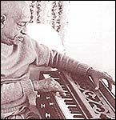

| |
Harmonium
| The harmonium is a classical musical instrument which
originates from Europe. The hand pumped harmonium drone is also referred
to as sruti or sruti box. This is a secondary melody instrument which
is used in vocal music such as bhajanas and kirtanas.
Many Hare Krishna devotees have mastered this instrument and offer
their services by playing beautiful music during the kirtana services
and ceremonies at the temples. |
|
 |
|